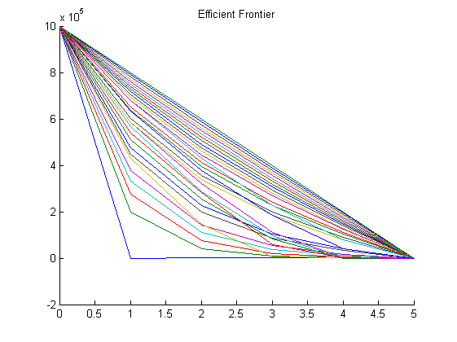
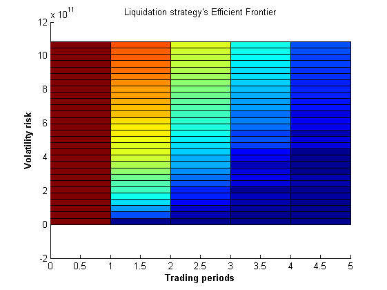

Portfolio transaction optimal trading
Contents
- Parameters
- Market impact modeling from high frequency data
- Minimal expected shortfall : minimizing the litigation risk
- Expected shortfall when we sell steadily over time
- Minimum trading variance : minimizing the volatility risk
- Expected shortfall when we sell everything at once
- Building the efficient frontier
- Plotting the 3D efficient surface
Parameters
maturity in days
T=5; % number of time periods N=5; % time period length tau=T./N; % daily volume 5 million shares $/share gamma=2.5*10^(-7); % impact at 1 percent of market ($/share)/(share/day) eta=2.5*10^(-6); % bid ask spread $/share epsilon=0.0625; % volatility of 30% annual sigma=0.95; % initial holding X0=1000000;
Market impact modeling from high frequency data
permanent_impact=@(x)linear_permanent_impact(gamma,x); temporary_impact=@(x)simple_temporary_impact(epsilon,eta,tau,x);
Minimal expected shortfall : minimizing the litigation risk
obj =@(x) expected_shortfall(tau,permanent_impact,temporary_impact,x); nonlincon=@(x) shortfall_variance(sigma, tau, x); Aeq = [zeros(1,N+1);zeros(1,N+1)]; Aeq(1,1)=1; Aeq(2,end)=1; beq(1)=X0; beq(2)=0; x0 = zeros(N+1,1); x0(1)=X0; lb = zeros(1,N+1); ub = X0*ones(1, N+1); x=fmincon(obj,x0,[],[],Aeq,beq,lb,ub); % Minimal expected shortfall % constant trading over period
Warning: The default trust-region-reflective algorithm does not solve problems
with the constraints you have specified. FMINCON will use the active-set
algorithm instead. For information on applicable algorithms, see Choosing the
Algorithm in the documentation.
Warning: Your current settings will run a different algorithm (interior-point)
in a future release.
Local minimum found that satisfies the constraints.
Optimization completed because the objective function is non-decreasing in
feasible directions, to within the default value of the function tolerance,
and constraints are satisfied to within the default value of the constraint tolerance.
Active inequalities (to within options.TolCon = 1e-06):
lower upper ineqlin ineqnonlin
6 1
Expected shortfall when we sell steadily over time
associated variance
x max_trading_variance=shortfall_variance(sigma,tau,x) min_exp_sh=expected_shortfall(tau,permanent_impact,temporary_impact,x)
x =
1.0e+06 *
1.0000
0.8000
0.6000
0.4000
0.2000
0
max_trading_variance =
1.0830e+12
min_exp_sh =
6.6250e+05
Minimum trading variance : minimizing the volatility risk
obj =@(x) shortfall_variance(sigma, tau, x); Aeq = [zeros(1,N+1);zeros(1,N+1)]; Aeq(1,1)=1; Aeq(2,end)=1; beq(1)=X0; beq(2)=0; x0 = zeros(N+1,1); x0(1)=X0; lb = zeros(1,N+1); ub = X0*ones(1, N+1); options = optimset('Algorithm','interior-point'); [x,fval,exitflag]=fmincon(obj,x0,[],[],Aeq,beq,lb,ub); % Minimal expected shortfall % trading everything at once
Warning: The default trust-region-reflective algorithm does not solve problems
with the constraints you have specified. FMINCON will use the active-set
algorithm instead. For information on applicable algorithms, see Choosing the
Algorithm in the documentation.
Warning: Your current settings will run a different algorithm (interior-point)
in a future release.
Local minimum found that satisfies the constraints.
Optimization completed because the objective function is non-decreasing in
feasible directions, to within the default value of the function tolerance,
and constraints are satisfied to within the default value of the constraint tolerance.
Active inequalities (to within options.TolCon = 1e-06):
lower upper ineqlin ineqnonlin
2 1
3
4
5
6
Expected shortfall when we sell everything at once
x min_trading_variance=shortfall_variance(sigma, tau, x) max_exp_sh=expected_shortfall(tau,permanent_impact,temporary_impact,x)
x =
1000000
0
0
0
0
0
min_trading_variance =
0
max_exp_sh =
2562500
Building the efficient frontier
numStrategies = 30; targetedVarArray = linspace(min_trading_variance,max_trading_variance,numStrategies); liquidation_strategies = zeros(N+1,numStrategies); % preallocating memory for i=1:numStrategies targeted_variance=targetedVarArray(i); obj =@(x) expected_shortfall(tau,permanent_impact,temporary_impact,x); nonlincon=@(x) constrained_variance(sigma,tau,targeted_variance,x); Aeq = [zeros(1,N+1);zeros(1,N+1)]; Aeq(1,1)=1; Aeq(2,end)=1; beq(1)=X0; beq(2)=0; x0 = zeros(N+1,1); x0(1)=X0; options = optimset('Algorithm','interior-point'); [x,fval,exitflag]=fmincon(obj,x0,[],[],Aeq,beq,[],[],nonlincon,options); % Minimal expected shortfall % constant trading over period liquidation_strategies(:,i)=x; end hold on; plot(0:N,liquidation_strategies); title('Efficient Frontier');
Local minimum possible. Constraints satisfied. fmincon stopped because the size of the current step is less than the default value of the step size tolerance and constraints are satisfied to within the default value of the constraint tolerance. Local minimum found that satisfies the constraints. Optimization completed because the objective function is non-decreasing in feasible directions, to within the default value of the function tolerance, and constraints are satisfied to within the default value of the constraint tolerance. Local minimum found that satisfies the constraints. Optimization completed because the objective function is non-decreasing in feasible directions, to within the default value of the function tolerance, and constraints are satisfied to within the default value of the constraint tolerance. Local minimum found that satisfies the constraints. Optimization completed because the objective function is non-decreasing in feasible directions, to within the default value of the function tolerance, and constraints are satisfied to within the default value of the constraint tolerance. Local minimum found that satisfies the constraints. Optimization completed because the objective function is non-decreasing in feasible directions, to within the default value of the function tolerance, and constraints are satisfied to within the default value of the constraint tolerance. Solver stopped prematurely. fmincon stopped because it exceeded the function evaluation limit, options.MaxFunEvals = 3000 (the default value). Local minimum found that satisfies the constraints. Optimization completed because the objective function is non-decreasing in feasible directions, to within the default value of the function tolerance, and constraints are satisfied to within the default value of the constraint tolerance. Local minimum found that satisfies the constraints. Optimization completed because the objective function is non-decreasing in feasible directions, to within the default value of the function tolerance, and constraints are satisfied to within the default value of the constraint tolerance. Solver stopped prematurely. fmincon stopped because it exceeded the function evaluation limit, options.MaxFunEvals = 3000 (the default value). Solver stopped prematurely. fmincon stopped because it exceeded the function evaluation limit, options.MaxFunEvals = 3000 (the default value). Solver stopped prematurely. fmincon stopped because it exceeded the function evaluation limit, options.MaxFunEvals = 3000 (the default value). Solver stopped prematurely. fmincon stopped because it exceeded the function evaluation limit, options.MaxFunEvals = 3000 (the default value). Local minimum possible. Constraints satisfied. fmincon stopped because the size of the current step is less than the default value of the step size tolerance and constraints are satisfied to within the default value of the constraint tolerance. Local minimum found that satisfies the constraints. Optimization completed because the objective function is non-decreasing in feasible directions, to within the default value of the function tolerance, and constraints are satisfied to within the default value of the constraint tolerance. Solver stopped prematurely. fmincon stopped because it exceeded the function evaluation limit, options.MaxFunEvals = 3000 (the default value). Local minimum possible. Constraints satisfied. fmincon stopped because the size of the current step is less than the default value of the step size tolerance and constraints are satisfied to within the default value of the constraint tolerance. Local minimum found that satisfies the constraints. Optimization completed because the objective function is non-decreasing in feasible directions, to within the default value of the function tolerance, and constraints are satisfied to within the default value of the constraint tolerance. Solver stopped prematurely. fmincon stopped because it exceeded the function evaluation limit, options.MaxFunEvals = 3000 (the default value). Local minimum found that satisfies the constraints. Optimization completed because the objective function is non-decreasing in feasible directions, to within the default value of the function tolerance, and constraints are satisfied to within the default value of the constraint tolerance. Solver stopped prematurely. fmincon stopped because it exceeded the function evaluation limit, options.MaxFunEvals = 3000 (the default value). Local minimum found that satisfies the constraints. Optimization completed because the objective function is non-decreasing in feasible directions, to within the default value of the function tolerance, and constraints are satisfied to within the default value of the constraint tolerance. Local minimum found that satisfies the constraints. Optimization completed because the objective function is non-decreasing in feasible directions, to within the default value of the function tolerance, and constraints are satisfied to within the default value of the constraint tolerance. Local minimum found that satisfies the constraints. Optimization completed because the objective function is non-decreasing in feasible directions, to within the default value of the function tolerance, and constraints are satisfied to within the default value of the constraint tolerance. Local minimum found that satisfies the constraints. Optimization completed because the objective function is non-decreasing in feasible directions, to within the default value of the function tolerance, and constraints are satisfied to within the default value of the constraint tolerance. Local minimum possible. Constraints satisfied. fmincon stopped because the size of the current step is less than the default value of the step size tolerance and constraints are satisfied to within the default value of the constraint tolerance. Local minimum found that satisfies the constraints. Optimization completed because the objective function is non-decreasing in feasible directions, to within the default value of the function tolerance, and constraints are satisfied to within the default value of the constraint tolerance. Local minimum found that satisfies the constraints. Optimization completed because the objective function is non-decreasing in feasible directions, to within the default value of the function tolerance, and constraints are satisfied to within the default value of the constraint tolerance. Local minimum found that satisfies the constraints. Optimization completed because the objective function is non-decreasing in feasible directions, to within the default value of the function tolerance, and constraints are satisfied to within the default value of the constraint tolerance. Local minimum possible. Constraints satisfied. fmincon stopped because the size of the current step is less than the default value of the step size tolerance and constraints are satisfied to within the default value of the constraint tolerance. Local minimum found that satisfies the constraints. Optimization completed because the objective function is non-decreasing in feasible directions, to within the default value of the function tolerance, and constraints are satisfied to within the default value of the constraint tolerance.
Plotting the 3D efficient surface
surf(repmat((0:N)',1,numStrategies),repmat(targetedVarArray,N+1,1),liquidation_strategies) title('Liquidation strategy''s Efficient Frontier'); xlabel('Trading periods','fontweight','b'); ylabel('Volatility risk','fontweight','b'); zlabel('Stock amount','fontweight','b');